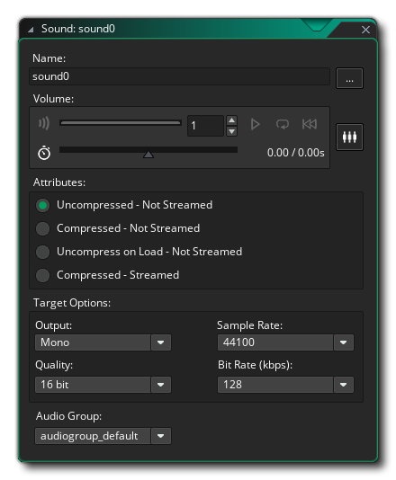
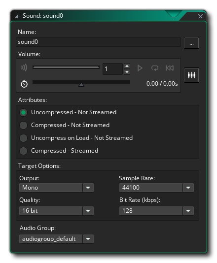

Before we continue on to fill in the details of our Ball object, let's take a moment to add some sound effects to our game.
We're going to add three sounds: a bounce sound, a break sound and a button sound. To start with, go to the resource tree and right click  the "Sounds" resource and select Create. This will open the Sound Editor:

the "Sounds" resource and select Create. This will open the Sound Editor:

Name the sound "snd_Bounce" and then click file explorer button and browse to an appropriate sound (it should be *.wav or *.ogg format, and you can find example sounds in the "Tutorial Resources" folder that has been created as part of the tutorial in the project directory) then add it. We don't need to change any other settings here, so close this window.
Now create two more sound resources and name them "snd_Break" and "snd_Click" and add appropriate sound files to them.
With that done, we can move on to creating the ball object.